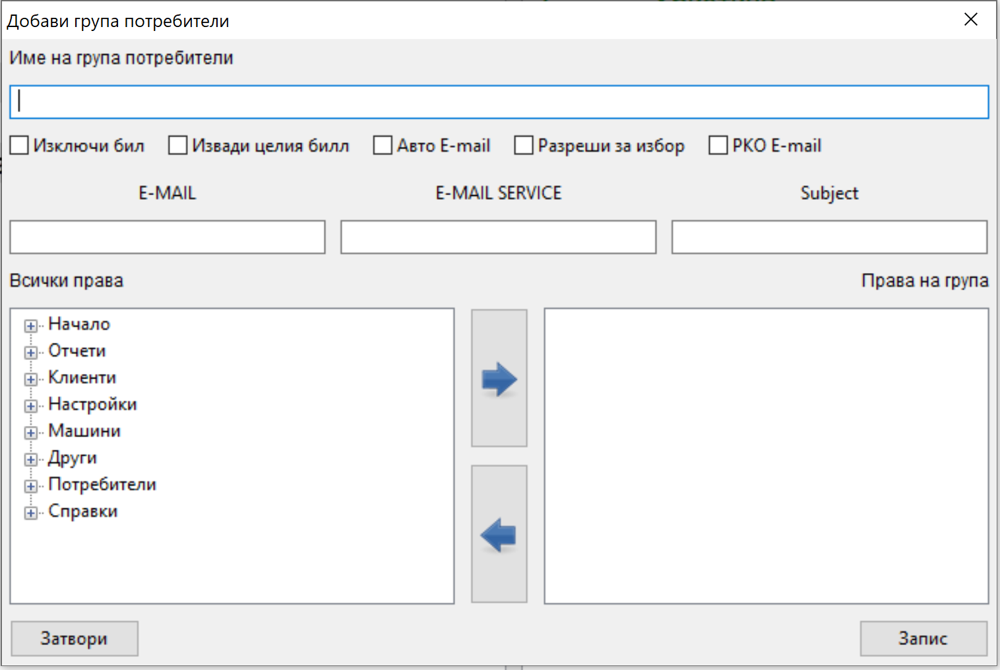
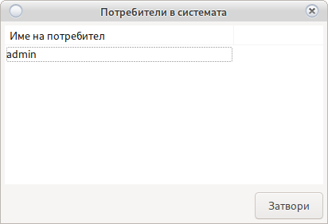
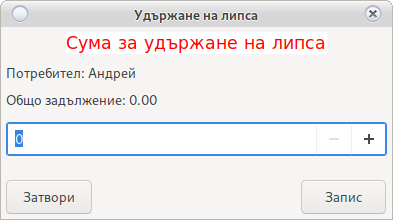

Потребители, Групи и права за достъп
Система за права за достъп до програмата

Добави/Редактирай Група
Добавя и редактира групи и права за достъп на група.
Може да видите всички потребители намиращи се в съответна група използвайки филтър Единичен Клик на името на групата в ляво на основния прозорец
За добавяне на нова група използвайте бутона Добави група
За редактиране на съществуваща група Двоен клик върху групата в ляво на основния прозорец
Зарежда се прозорец за добавяне на група

Името на групата е свободно, но трябва да бъде уникално. Разпознава малки и ГЛАВНИ букви
Създадена група не може да бъде премахната, изтрита или деактивирана.
В ляво на прозореца са изброени всички права по прозорци.
В дясно правата които групата притежава.
Добавяне на права.
Изберете право в ляво на прозореца и натиснете 
Правото ще се покаже в дясно при правата които потребителя има.
В случай, че маркирате цяла група права, то тя ще бъде добавена с всички възможни права в нея.
Премахване на права.
Изберете право в дясно на прозореца и натиснете 
Правото ще изчезне от правата които потребителя има.
В случай, че маркирате цяла група права, то тя ще бъде премахната с всички възможни права в нея.
-
Изключи бил
Указва на програмата дали била ще се заключи при отчет и/или вадене.
-
Авто E-Mail
При пускане на дневен отчет, автоматично ще изпраща копие на собственика.
Автоматично ще изпраща информация за нов ремонт на сервиза и собственика.
При извършен ремонт, уведомява собственика.
-
Извади Целия бил
При вадене на бил в отчет всички машини ще бъдат избрани за изваждане.
В случай, че не вадите бил на определена машина използвайте Двоен клик
-
E-Mail
Имейл на собственик E-mail1, E-mail2
-
E-MAIL Сервиз
Имейл на сервиз погледни Авто E-mail и Сервиз
-
Subject
Заглавие на E-Mail погледни Авто E-mail Служи за разпознаване от кое казино и кой POS терминал е изпратено съобщението.
-
Разреши за Избор
Управителя не би трябвало да има права за промяна на групи и потребители с висок приоритет като Собственик
Избора на тази опция ще укаже, че групата е с нисък приоритет.
В този случай ако правата за редакция на група са премахнати от група Управител, но са добавени права за създаване и редакция на потребител, всички от група управител ще могат да добавят редактират потребители в група Крупие без да могат да сменят правата.
Внимание!
Напомняме, че всеки бутон трябва да бъде показан по прозорци
Или ако потребител има достъп до редакция на потребители,
Но в Начало не е показан бутона Настройки
и/или в Настройки не е показан бутона Потребители
то достъпът ще е Няма да е възможенИнформация!
При промяна на правата, потребителя ще придобие новите права след повторен вход в системата.-
PKO E-mail
Включването на тази опция, ще изпраща e-mail на собственика с оборота след приключване на смяна
-
Добави/Редактирай Потребител
Може да видите всички потребители намиращи се в съответна група използвайки филтър Единичен Клик на името на групата в ляво на основния прозорец
За добавяне на нов потребител използвайте бутона Нов Потребител
За редакция на съществуваш Двоен клик на избрания потребител в дясно на основния прозорец
Отваря се прозорец за добавяне на потребител

Имената на потребителя трябва да са уникални. Разпознава малки и ГЛАВНИ букви.
Веднъж добавен Потребител не може да бъде премахнат а само деактивиран.
-
Име на потребител
Свободен текст за разпознаване
-
Парола
Парола за вход може да бъде сменена
-
Активен/Не Активен
Ако потребителя е Не Активен няма да се показва при Вход
-
Група
Потребителя ще придобие правата на избраната Група от падащото меню
-
Добави Карта
Отваря

Поставете карта в четеца и натиснете Запис
Картата ще бъде инициализирана с потребителя и ще позволи вход с карта и скачаща кей система
Активни потребители
Показва всички влезли в системата потребители.

Ако е настроено потребителите могат да бъдат изхвърлени с Двоен Клик
Внимание!
Не е тествано изхвърляне при отчитане на крупие.
Удържане на липса
В случай, че липсата на крупие се удържа от заплата
тя може да бъде премахната от тук.
Изберете потребител от дясно на основния прозорец и натиснете Удържане на липса
Ще се отвори

Общо задължение е задължението натрупано в целия период на работа на потребителя.
Всички изплащания са приспаднати от сумата.
В случай на сума с отрицателен знак, то потребителя е надплатил всички задължения към организатора.
Въведете сумата която се удържа и натиснете Запис